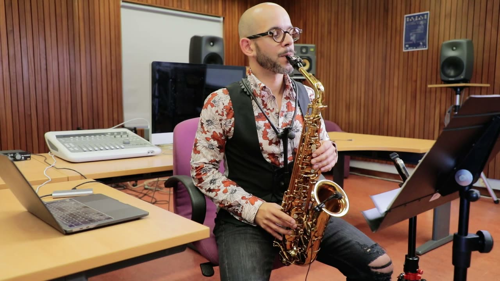
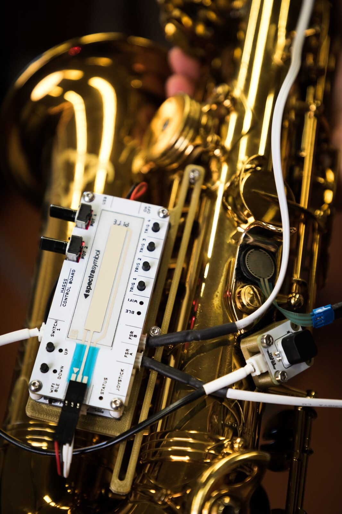

Music for HASGS, Stuby 1b
Project Description
The work presented here is based on the Hybrid Augmented Saxophone of Gestural Symbioses (HASGS) system with a focus on and its evolution over the last six years, and an emphasis on its functional structure and the repertoire. The HASGS system was intended to retain focus on the performance of the acoustic instrument, keeping gestures centralised within the habitual practice of the instrument, and reducing the use of external devices to control electronic parameters in mixed music. Taking a reduced approach, the technology chosen to prototype HASGS was developed in order to serve the aesthetic intentions of the pieces being written for it. This strategy proved to avoid an overload of solutions that could bring artefacts and superficial use of the augmentation processes, which sometimes occur on augmented instruments, specially prototyped for improvisational intentionality. The definition of an instrumental technique is largely underlying the aesthetics of the pieces that constitute the repertoire of an instrument. The repertoire developed for HASGS is an example of the creative variety that mapping supports. Consequently, the difficulty of accurately defining a standardised instrumental technique is enormous, even when the relationship between an augmented system and an acoustic instrument allows us to establish similarities, insofar shown by how composers made similar use of the technology. The gestural phenomenon of interaction between instrumental and electroacoustic sounds became a fundamental point of interest of contemporary music. A mission of the 20th Century art was to make the invisible visible; in the 21st century artists may become more concerned with finding ways to allow us to sense the invisible as new perceptual modes may be uncovered. This concert features music by Henrique Portovedo, Nicolas Canot, Stewart Engarts and Rodney Duplessis.
Type of submission
Option 2: “NIMEs with a story” - dedicated to NIMEs that have been presented before. This includes new pieces for interfaces that have been previously presented at NIME or outside of NIME.
Program Notes
Music for HASGS - Study Ib, belongs to a serie of pieces written by Henrique Portovedo for the Hybrid Augmented Saxophone of Gestural Symbiosis. These pieces were developed over the specialised algorithmic composition software named Slippery Chicken developed by Michael Edwards, written in and functions on the principles of the Common Lisp Object System (CLOS). The piece explores microtonal relations of tone pitches and layers of multiphonics permutations, using two different methods and softwares, SaxMultis and Multi2Sax. The live processing of the saxophone sound is controlled by HASGS on parameters as Ring Modulation, Grain Flow and Spectral Freeze.
Other pieces in the Program are:
CICADAS Memories, by Nicolas Canot is much more an improvisational process than a piece of written music. It explores a method that eventually introduces a non standard musical way of thinking : the present of the live performed music is controlled, altered by the actualization of the past. Therefore, the performer has to develop two simultaneous ways of thinking while performing : a part of his mind for the present another one for the future.
The work “Indeciduous” by Stewart Engarts is performed as a free blues on an electronic drum loop. Durations of different phrases are given as suggestions, as are musical gestures based on improvisational fluency. The pitches of sound noticed are performed in order to be part of the recorded loop and consequently triggered by the performer. The action of the looper is managed through a trigger button, suggesting a certain inactivity during the moments when the buffer of the looper is returning the previously recorded material. “Disconnect” by Rodney Duplessis takes the advantage of discreet and continuous control provided by HASGS, in order to make the performance of electronic processing elements more organically. The electronic component consists of a set of buffers for recording and reproducing the saxophonistic material, including the loop of that material and a bank of filters. The latter is defined with formants for three different vowel sounds: ⟨ə⟩ ("uh"), ⟨ɪ⟩ ("ih"), and ⟨ɑ⟩ (“aw").
Media

▶Music for HASGS - Study 1b
HASGS: Cicadas Memories, N. Canot
HASGS: Indeciduous, S. Engarts


HASGS
Ethics Statement
HASGS is reusing components and materials for the care of the planet from prototype to prototype presented during the research period. Also the expansion of artistic borders towards those forms that take into account knowledge and aesthetics outside of the comercial targets. Within the ethical commitment, the integrating power of art is defended, both in a social sense, to bring together and unite the different sensitivities, and in an introspective sense, in the form of a process of self-knowledge and personal improvement. Finally, the Do-It-Yourself counterculture and the ability to create designs that respond to needs, developing their own initiatives and collaborating with a learning network, is part of the genesis of the musical interface used in the project.
Acknowledgements
HASGS research was supported by National Funds through FCT - Foundation for Science and Technology under the project SFRH/ BD/99388/2013, from 2014 to 2019. Fulbright has been associated with this project supporting the research residency at University of California Santa Barbara. We acknowledge the composers with pieces mentioned here, Nicolas Canot, Stewart Engart and Rodney Duplessis. Henrique Portovedo is member of INET-md at University of Aveiro.